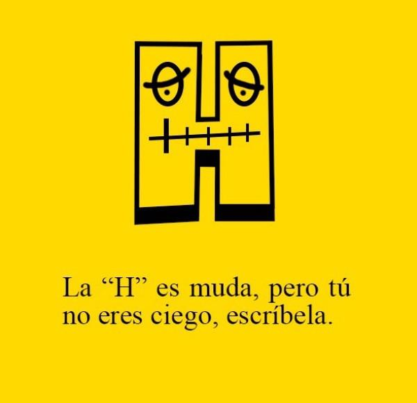

İspanyolcaya Giriş 2
İspanyolca Latince kökenli bir dil. Alfabesi Latin Alfabesine ufak eklemeler yapılarak oluşturulmuştur. Diğer Latin kökenli dillerle doğal olarak benzerlikler taşır. İtalyanca ile çok benzer bir dildir. Bu iki dilden birini iyi seviyede bilen, diğerini az çok anlayabilir. Kağıt üzerinde bakıldığında Fransızca ile de çok yüksek benzerlikleri olduğu görülebilir. Öte yandan Fransızca kendine özgü, yoğun bir telaffuz metoduna sahiptir, konuşurken bu benzerlikleri görmek kolay kolay mümkün olmaz. Portekizce ise İspanyolca’nın bir üst versiyonu gibi görülebilir. Portekizce konuşanlar İspanyolca konuşanları büyük oranda anlayabilmektedir. İspanya’da konuşulan İspanyolca Castellano (kasteyano) veya Türkçesi ile Kastilyaca olarak da bilinir.
İspanyolca tahmini olarak 427 Milyondan fazla konuşanıyla Dünyanın en çok konuşulan ikinci dilidir. İspanya dışında Latin Amerika’nın büyük bölümü, Kuzey Amerika, Asya ve Afrikadaki birkaç ülke tarafından resmi dil olarak kabul edilmiştir. Güney Amerika coğrafyasının çoğunluğu İspanyolca konuşsa da, bölgede en büyük yüzölçümüne ve nüfusa sahip ülke olan Brezilya’da Portekizce konuşulur. Elbette bu dilin bu kadar yaygınlaşmasının tek nedeni Avrupa’daki sömürgeleştirme sürecidir.
İspanya’nın bulunduğu İber yarım adası Arapların işgalinden, uzun yıllar süren savaşlar ve etkileşimlerden dolayı İspanyolcadaki Arapça etkisi büyüktür. Birçok İspanyolca kelime Arapça kökenlidir.
İspanyol Alfabesi 27 harf ve 2 digraf, yani tek ses veren ikili harf kombinasyonundan oluşur.
Aşağıdaki tabloda bu harfler ve orjinal isimleri, parantez içlerinde ise Türkçe olarak çözümlenmiş telaffuzları yer alıyor.
| A a | B b | C c | Ch ch | D d | E e | F f | G g | H h | I i |
|---|---|---|---|---|---|---|---|---|---|
| a | be | ce | che(çe) | de | e | efe | ge | hache (açe) | i |
| J j | K k | L l | Ll ll | M m | N n | Ñ ñ | O o | P p | Q q |
| jota (hota) | ka | ele | elle (eye/eje) | eme | ene | eñe(enye) | o | pe | cu(ku) |
| R r | S s | T t | U u | V v | W w | X x | Y y | Z z | |
| erre | ese | te | u | uve (ube) | uve doble (ube doble) | equis (ekis) | i griega (ye/je) | zeta (seta) |
Burada digraf olanlar Ch ve Ll ifadeleridir.
Bu ve bir önceki yazıda “Türkçe okunuşu” yerine “Türkçe çözümlenişi” ifadesini kullanmamın önemli bir nedeni var. Dillerdeki sesler kendilerine özgüdür, başka bir dilin sesleriye tam anlamıyla ifade edilemez. Özellikle bir metin kullanılarak anlatılıyorsa. Metin bir dili öğrenmek için iyi bir yöntem değildir, önemli olan sesli öğrenimdir. Bu serinin amacı bir başlangıç, genel bir izlenim yaratmak. Zamanı geldiğinde Sabahlatan Youtube kanalında bu seriye özel videolar yayınlanacak. O zaman geldiğinde bu konuyla ilgili herhangi bir problem kalmayacaktır.
Alfabede ses çözümlemelerinde gösterdiğim Türkçe okunuşlar tam anlamıyla o sese denk gelmese de, Türkçede o sese en yakın ses olduğundan dolayı kullanıldı. Yazının ilerleyen kısımlarında bahsi geçen seslerin nasıl çıkarıldığından daha ayrıntılı bahsedilecek.
Bu yazıyı okuyan büyük bir yüzde muhtemelen ilk yabancı dili olarak İngilizceyi öğrenmiş ve İspanyolca da ikinci yabancı dili olacak. Anadili olarak Türkçe konuşan, harfleri kelime içerisinde tam sesini verecek şekilde kullanan insanlar İngilizceyi gördüklerinde diğer tüm Avrupa dillerinde de aynı istisnaların olduğunu düşünebilir. Fakat böyle bir durum yok. İngilizce, Fransızca ve az çok Almanca gibi diller ve bunların türevi olan, daha az konuşulan diller dışında Avrupa dilleri genel olarak fonetik yapıya sahip. Daha açık konuşmak gerekirse tüm harfler genellikle kendi sesini veriyor. Harflerin farklı kombinasyonlarına göre kelimelerin okunuşlarının değişmesi çok sık görülmeyen bir durum.
İspanyolca fonetiklik açısından Türkçeye çok benzer. Harflerin genelini Türkçede okuduğunuz gibi okursunuz. Normal şartlar altında bir dil hakkında bilgi verirken o dili Türkçe’ye benzetmeden, bağımsız olarak ele alırım. Türklerin İngilizce konuşurken bu kadar hata yapmasının nedeni buradan kaynaklanır. Türkçede bulunmayan sesleri Türkçedeki seslere benzeterek konuşmaya çalışırlar. Fakat İspanyolca’daki telaffuzların büyük kısmı Türkçedeki varyasyonları ile birebir aynıdır. Telaffuz farkları kelime içerisinde bulundukları zaman kullanılan vurgudan ileri gelir.
Şimdi bu alfabedeki istisna seslere teker teker değinelim.
A b c ch d e f g h i j k l ll m n ñ o p q r s t u v w x y z
A harfi Türkçede de kullanılan “A” sesini verir. Bu ses Dünya genelinde insanların en çok kullandığı sestir. Bu yüzden özellikle Eski Dünya alfabelerinin çoğu bu ses ile başlar. İstisna bir ses olmasa da, birden fazla dil öğrenen bir insanın bu gerçeğin bilmesi gerekli.
C harfinin verdiği ses bulunduğu yere göre değişiklik gösteriyor. C’nin ardından “e” ve “i” sesli harfleri geliyorsa peltek “S” sesini verirken, diğer durumlarda Türkçe’deki “K” sesini veriyor. Buradaki pelteklik İngilizcedeki “Th” harf kombinasyonunun barındırdığı gibi “F” sesinin baskın olduğu bir pelteklik değil, baskın sesin “S” olduğu bir peltekliktir.
Ch harf kombinasyonu Türkçedeki “Ç” sesini verir.
G harfi ardından “e” ve “i” sesli harfleri geliyorsa hırıltılı bir “H” sesi verirken, diğer durumlarda Türkçedeki “G” sesini verir.
H harfi okunmaz. Dillerdeki lüzumsuz istisnaların en güzel örneklerinden biridir. Örnek olarak İspanyolcadaki “hospital” kelimesi “ospital” şeklinde okunur.J harfi yine hırıltılı bir “H” sesi verecek şekilde okunur. X harfinin çoğu dilde verdiği sesi verir. X harfi Latin Alfabesi kullanan çoğu dilde hırıltılı “H” sesi verecek şekilde kullanılır.
K harfi İspanyolcanın kendi kelimelerinde yer almaz, dile sonradan giren “Kilo” gibi kelimelerde kullanılır.
Ll harf kombinasyonu İspanyolcanın konuşulduğu bölgeye göre farklı seslendirilir. Örneğin İspanya’da “Y” sesini verirken, Latin Amerika’nın çoğu ülkesinde “J” sesini verir. Burada dikkat edilmesi gereken, iki adet “L” harfinin yan yana kullanıldığıdır.
Ñ harfi içinde iki ses barındıran tek bir harftir. Türkçedeki “N” ve “Y” seslerini bir arada taşır. Harfin ismi olan “enye”, okunuşuna bir örnektir.
V harfi İspanyolcada “B” sesine yakın bir ses verir. Konuşmada genellikle B ile birbirlerinden ayırt edilemez.
X harfi neredeyse her zaman İngilizcedeki gibi “KS” sesini verir. Fakat “mehiko” şeklinde okunan Mexico örneğinde görüleceği gibi hırıltılı bir “H” sesi taşıdığı örnekler de vardır.
Y harfinin sesi Ll ile aynıdır, aynı aksan istisnaları bu harf için de geçerlidir.
Z harfi ise peltek bir “S” sesi verir. Bu ses C harfinin içinde barındırdığı peltek “S” sesi ile aynıdır.
Harflerle ilgili bir başka değinilmesi gereken durum ise U harfiyle ilgili. Bu harfin kendi sesiyle ilgili bir istisna yok, fakat kullanıldığı yere göre okunup okunmama durumu birkaç kuralı da beraberinde getiriyor. Serinin ilk yazısında bahsi geçen “gue”, “que”, “gui”, “qui” gibi durumlarda U harfinin okunmaması durumunu hatırlıyorsunuzdur. Böyle bir kullanımda eğer U harfinin okunması gerekiyorsa bu harf “Ü” şeklinde yazılır. Bunun Türkçedeki Ü harfi ile uzaktan yakından alakası yok, buna üzerine iki nokta şeklindeki diyakritik işaret konmuş bir U harfi şeklinde bakacaksınız. Örneğin penguen anlamına gelen pingüino kelimesi “penguino” şeklinde, Guernica ise “gernika” şeklinde okunur.
Bu yazıda İspanyolcanın teknik detayları, kökeni ve coğrafyası kısaca işlenmiş oldu. Bunlar aşıldığına göre ilerleyen yazılarda gramer kuralları, zamanlar ve çekimler işlenecek olsa da; teknik detaylardan çok örneklere ve pratik kullanımlara ağırlık verilecek.